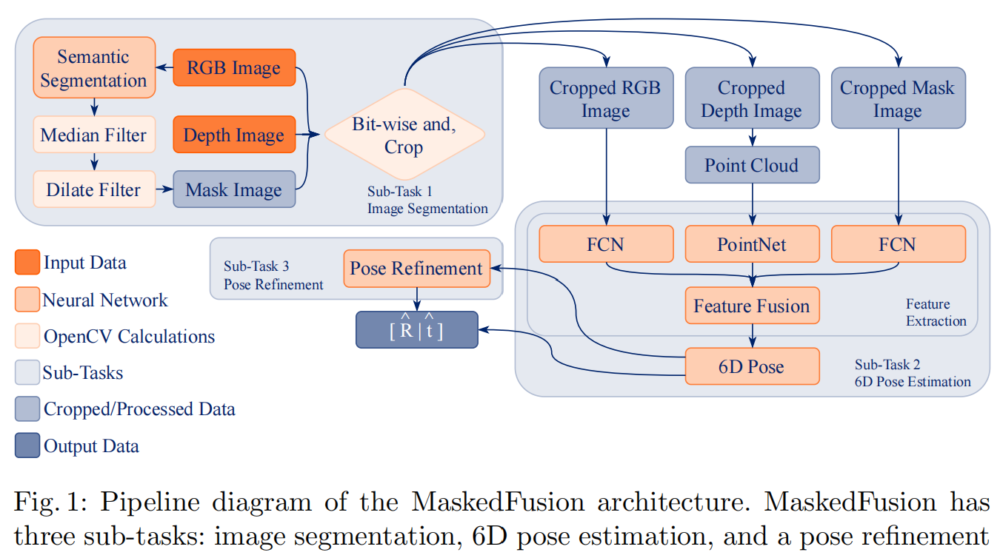
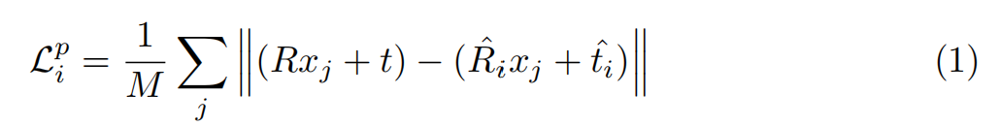
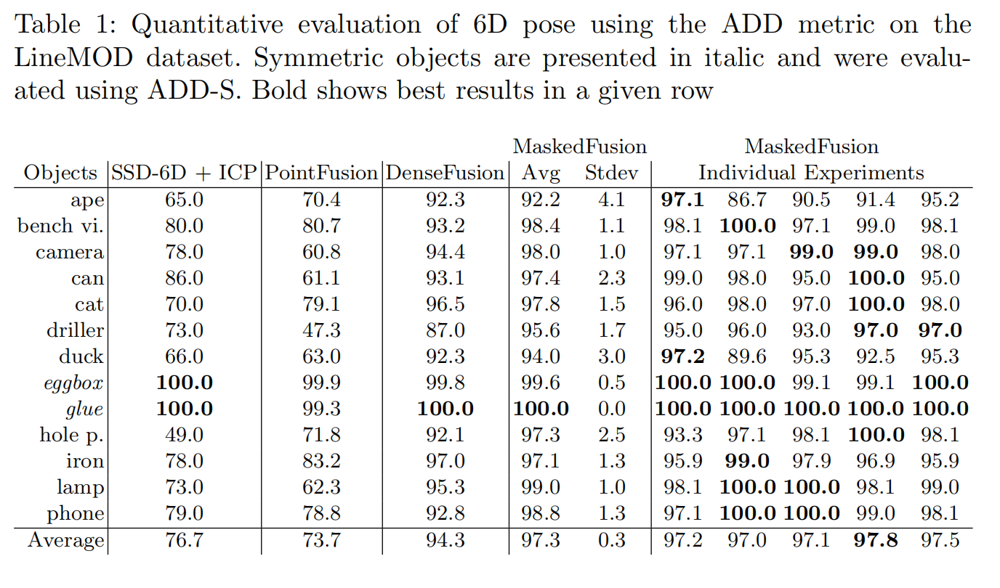
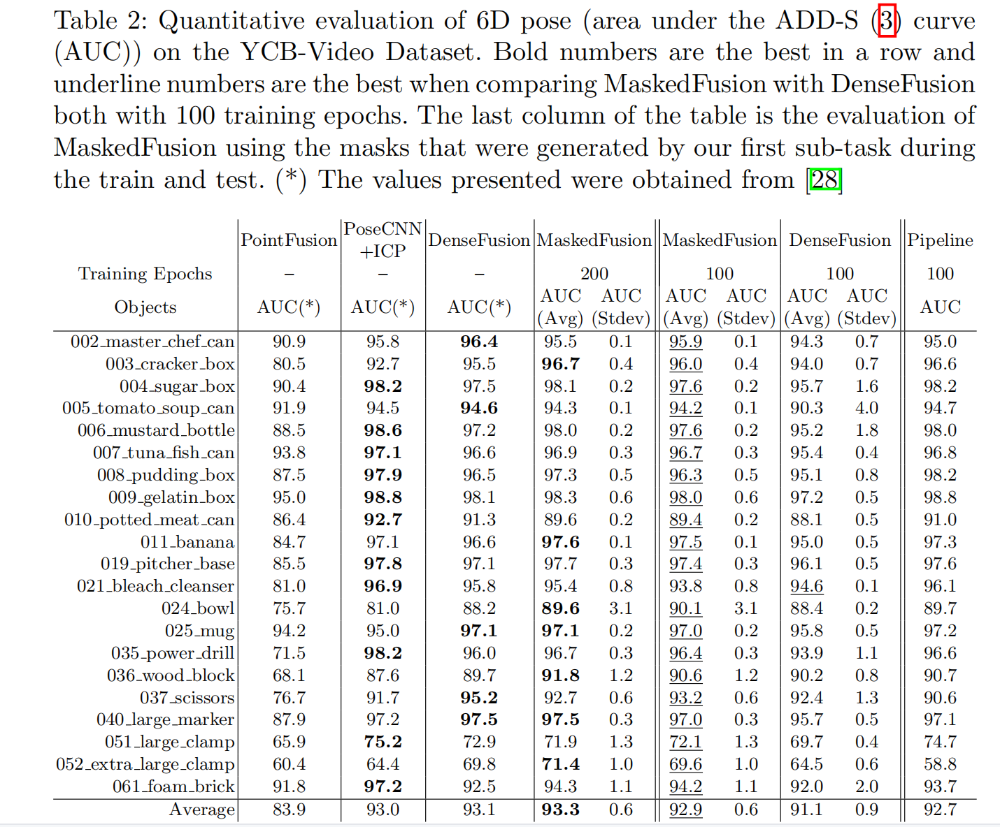

MaskedFusion
MaskedFusion: Mask-based 6D Object Pose Estimation
来源：ICMLA
代码：https://github.com/kroglice/MaskedFusion
引用量：3
提出的问题
现实中的物体存在遮挡(occlusions)和截断(truncations)等情况。
已有的方法
基于RGB
依赖于物体检测，关键点匹配以及3D渲染技术，并使用PnP算法来求解姿态。速度快，但存在遮挡时，recall就会很低。基于点云
依赖于描述符(descriptors)从场景中的物体中提取特征，并将其与在已知姿态中捕获的特征进行匹配基于RGB-D
直接从数据回归姿态，并做后处理优化
本文的方法
直接从RGB-D数据中回归姿态。
包含三个串行的子任务：
- 使用语义分割，对物体做检测(detection)和分类，并获取对应的mask
- 从不同类型的数据中提取特征，并使用pixel-wise的方式将它们混合在一起，使用6D pose neural network回归物体姿态（旋转和平移矩阵）
- Pose Refinement（可选，建议选），直接使用了DenseFusion中提出的方法。
方法的细节

1. Semantic Segmentation
该模块使用FCN做语义分割，得到mask，用mask对RGB和深度图像进行裁剪（按位与）。
然后将RGB(D)的裁剪结果用矩形框起来， 得到小一些的图，把这种小图连同对应mask输入6D pose NN，以预测姿态。
2. 6D Pose Neural Network
该模块包括两部分：feature extraction 和 6D pose estimation
(1) feature extraction
裁剪后的深度图转为了点云，用PointNet提特征；
裁剪后的RGB和mask用FCN提特征。
(2) 6D pose estimation
将上一步提取的特征concat起来，作为预测姿态的特征。
损失函数和DenseFusion中一样：

其中，$x_j$是从物体的3D模型中随机挑选的点，共$M$个。
(3) Pose Refinement
同DenseFusion。
实验结果

